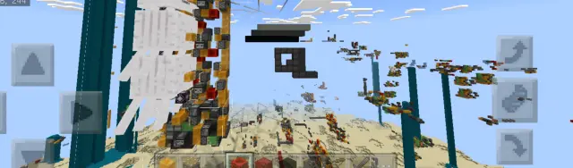
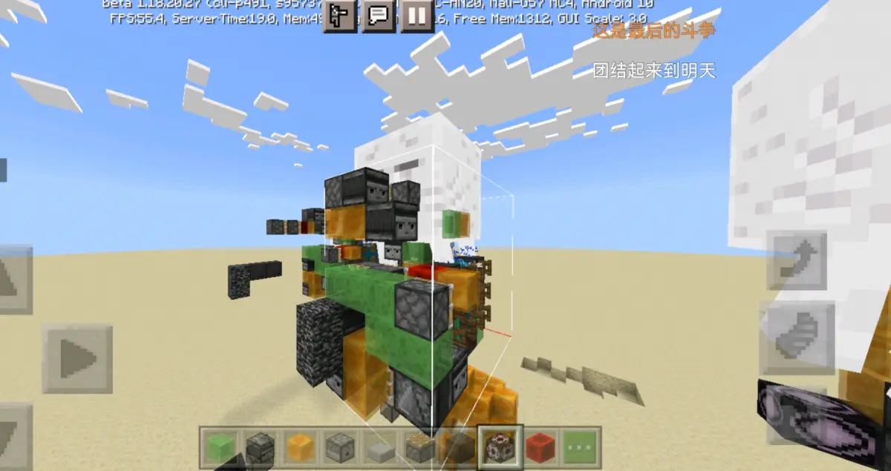
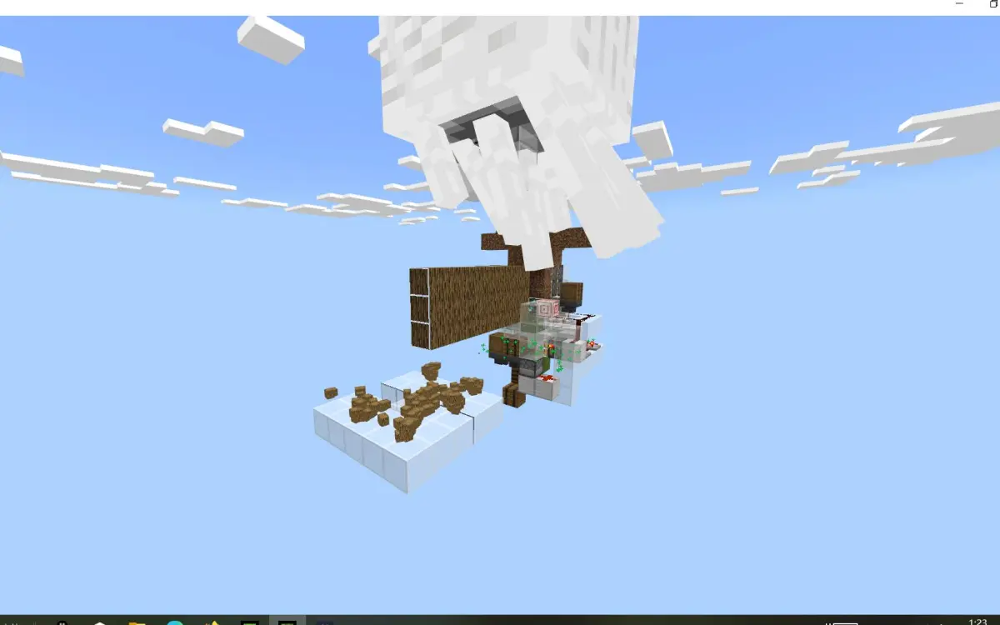
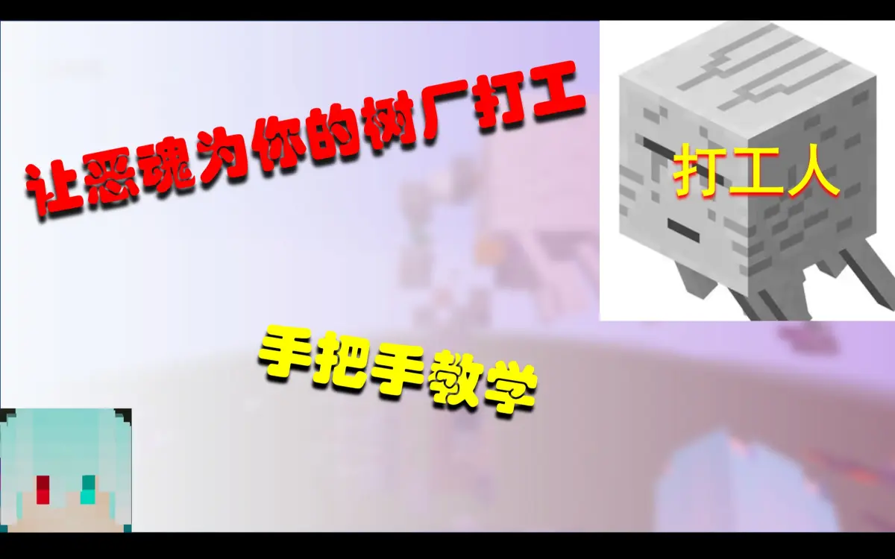
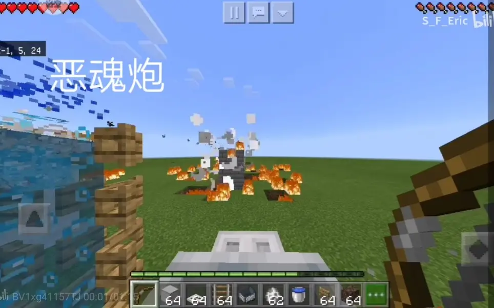

“重明”_AC_1可堆叠式移动恶魂炮
1.恶魂炮是什么？
恶魂炮是以恶魂的火球作为炮弹的火炮
2.有什么用？
和正常的火炮类似，只是适用范围不同，传统火炮利用TNT作为推进药和炮弹，无法做到指哪打哪，即使是矢量炮也会有一定的覆盖空缺，但是对工事打击效果很好。恶魂炮可以做到定点的打击，但是炮弹本身缺陷让其更加适合作为防御性武器使用。
3.和传统火炮相比的优势劣势？
相对优势很明显
上面说了，恶魂炮可以做到定点的打击，可以精确到格数，即高精确性。
并且具有全覆盖性，只要在炮的火力范围内，不论哪一个位置，都可以攻击到。
同时炮弹本身具有一定优势，理论上不考虑区块加载，射程是无限的。但是火球同样是实体，60s后会自动消失。
最后一点，只要生成火球的恶魂不被打掉，那么炮弹就是无限的。造完之后几乎不用考虑耗材。
上述是恶魂炮的优势，下面来讲讲相对的劣势
相较于传统的TNT装药炮弹，恶魂炮的炮弹同样具有十分明显的劣势。首先是火球的爆炸威力和破坏力非常之低，爆炸属性为4.034，爆炸威力为1，直接命中无甲玩家伤害为6。
由于爆炸属性较低的原因，火球无法摧毁抗性大于陶瓦的方块，这意味着什么？敌方目标只要包一层原石，不需要合金，炮就无法对其进行有效的杀伤。
爆炸威力低导致火球即使直接命中目标，造成的损害也非常低。
对玩家的伤害为6，只要玩家穿点甲，即使直接命中，几个火球对于玩家来说就是刮痧。
其次不能忘了一点，火球本身是可以多次反弹的，同时也会被TNT爆炸产生的冲击波所干扰。即使不用甲，小型目标仅靠玩家防御，也能很好的对付火球。如果玩家反弹时恰好近距离略偏弹道，火球是会反过来误伤己方的。
最后说明，恶魂也是生物，可以被玩家或 TNT直接伤害，再加上恶魂本身的极低的血量与较大的体积，导致无甲恶魂炮非常容易被破坏。如此的劣势让恶魂炮更加偏向于技术向或者单纯图一乐的模块，但也有一定可开发性能向的潜力。
那要怎么减少劣势呢？
①给恶魂炮装点甲
②将恶魂炮做成可竖向、横向堆叠式的，只要我火球量够多，那么就能减少一定爆炸威力低、伤害低的缺陷
③主要拿恶魂炮防御一些无甲的目标，比如由于技术原因无法安装无缝甲的导弹、飞行器。利用炮本身的高精确度的特点进行防御，能够取得不错的战果。
但是即使想办法弥补，依然无法改变火球本身的爆炸属性低，可再次反弹的缺点。想要对目标进行快速、有效的杀伤还是要靠TNT火炮。
4.关于舰艇
用于对付舰艇时，对于无甲的有一定威胁能力。但是需要了解一下，即使是现在无甲的舰艇，非高频电磁架构的火炮若处在高频模式时，火球可以被TNT冲击波反弹，所以算是我提醒一下，想利用恶魂炮对付战舰不要对着炮膛打。高频电磁架构的火炮，具有明显的空爆效果的，此类火炮对火球具有主动防御效果，如果说想靠火球消耗不是不行，但是不要忘了，玩家箭矢、雪球、三叉戟都可以反弹火球。
对于全原石甲的舰艇，恶魂炮应该怎么办呢，直接寄就行。还是需要靠传统TNT火炮解决。
5.恶魂炮建造
恶魂炮的发射方式分为玩家手操以及玩家投掷物弹射。
手操恶魂炮非常简单，怎么个简单法呢？不需要专门的教程来教你们怎么做，你甚至可以直接从生电党的恶魂树厂等装置上白嫖一个就能用。并且整个火球生成装置也是非常简单，就是不超过15个方块的事情。只需要想办法让玩家能够弹到火球即可，想要加点精确度可以用不完整方块卡玩家位置。想要移动化的，想办法挡一下恶魂的仇恨视线再加个移动装置就行。
我来给俩个传送门，你们可以直接去做一个。
不建议白嫖up主（）

【MCBE】简易的自动树场，恶魂打工 B 站视频 »
[冷雪]MCBE1.18.30恶魂树厂教程 B 站视频 »至于弹射物式的恶魂炮，我首先说几个特性
①恶魂火球可以被箭、三叉戟等投掷物弹开
②玩家射出的箭、三叉戟等投掷物的方向与玩家面朝的方向相同，并且会随玩家的方向变化而变化
得知特性的来源

基于弹射物特性的恶魂火球发射器（恶魂炮） B 站视频 »公布几个实验出来的数据
①箭、三叉戟等投掷物可以保存在气泡柱中，并且不会消失
②利用箭弹射火球，弹道非常稳定，精确度极高，每次的弹射点都相同
③发射器射出的投掷物可以弹开恶魂火球，但是无法做到玩家同向的弹射
④即使在使用弹射物式恶魂炮时玩家阵亡，弹射物的方向与阵亡前相同，玩家复活后方向重置，方向与复活后玩家相同。
将上述特性、数据综合利用即可做出弹射物式的恶魂炮，至于怎么移动玩家的箭矢，就要靠大家自己造作了，比如水流。最好有人研究下方块卡着箭的移动方式。
再说说弹射物式恶魂炮的优劣势
优势是拥有手操恶魂炮不可比拟的高精确度，因为省去了玩家手动弹射这个步骤，将人员弹射失误、精度损失的可能性直接降低到0。并且可以同时操作多门恶魂炮，弥补爆炸威力低、伤害低的缺点。即使弹射物意外错位，还能自动转换为手操恶魂炮。弹射物式恶魂炮同时可以搭配各种瞄具，比如弩、望远镜、弓，也可配准星瞄准。
相对于手操恶魂炮的劣势是，攻击范围缩小，弹射物可能会受外界影响导致错位。但是也算不上什么大问题，可以通过多门炮交叉填补攻击范围的漏洞。错位本身也不是什么问题，上面说了，不过就是变成了手操恶魂炮而已。
关于一些说什么想要技术封锁的，随你们。曾经这样除了恶心别人也没什么点能讲，不过现在是连人都恶心不到了，别人已经变的佛系起来了。想技术封锁的我先给一点建议。
先去把自己的基础打牢了，把基础的练完了再来封锁，不然别人一眼就能看出来你做了个什么东西，到底有没有什么理论公式可深究。所以说要装也要装像一点。不打牢基础，技术封锁就不叫技术封锁了，我们都叫“寄术封锁”，封锁者就会摇身一变，变成乐子人。
最后说明，对于航械来说，各个领域加个移动化都能属于航械范畴，所以去借鉴其他领域的优秀设计，可以给航械增添意想不到的优势。
引用或转载请标明出处
顺便附上航械群群号 621772505
完